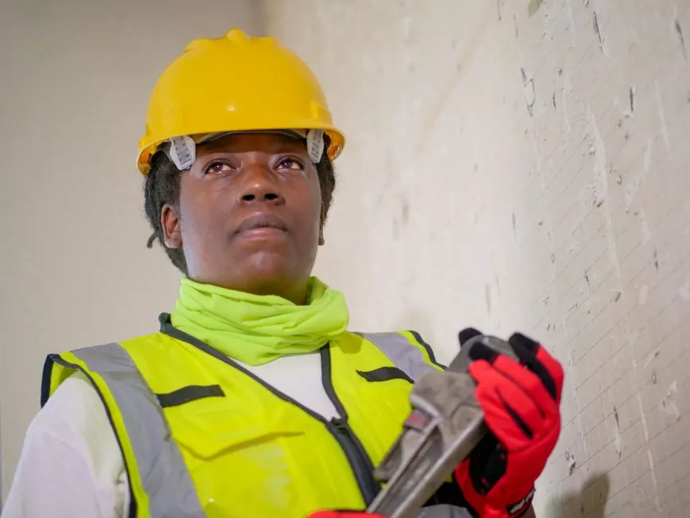

Comprehensive Leak Assessment
We perform a thorough evaluation of your water meter and plumbing system to identify any leaks.
Water Meter Leak Detection Naples FL is essential for homeowners experiencing unusually high water bills. Our High Bill Leak Detection Naples services pinpoint leaks quickly, saving you money and preventing further damage.

Water Meter Leak Detection Naples FL is a specialized service that identifies leaks in your plumbing system, particularly those affecting your water meter. This service is crucial when you notice an unexplained spike in your water bills, as it helps prevent waste and costly repairs.
Local Naples customers often require this service due to the region's unique plumbing challenges, including aging pipes and fluctuating water pressure. High Bill Leak Detection Naples is vital for maintaining efficient water usage and protecting your property from potential water damage.
Our water meter leak detection service covers a comprehensive assessment of your plumbing system. We identify leaks, provide solutions, and offer maintenance recommendations.
We perform a thorough evaluation of your water meter and plumbing system to identify any leaks.
Utilizing advanced pressure testing techniques, we pinpoint leaks that may not be visible.
After the assessment, we provide a detailed report outlining our findings and recommendations.
We offer follow-up services to ensure your plumbing remains leak-free after repairs.
The process begins with an initial assessment of your water meter and plumbing system, typically taking about 30 minutes. Our certified technicians will identify potential issues.
Next, we conduct pressure testing using a water pressure gauge to determine if there are any discrepancies in your system, which helps pinpoint leaks.
Our team performs a thorough visual inspection of your plumbing, looking for signs of leaks, such as damp spots or corrosion, which can indicate underlying issues.
We utilize advanced tools like plumbing snakes and drain augers to locate hard-to-find leaks, ensuring we leave no stone unturned.
Finally, we provide a detailed report of our findings and recommend necessary repairs or maintenance, typically within an hour of completing the inspection.

The process begins with an initial assessment of your water meter and plumbing system, typically taking about 30 minutes. Our certified technicians will identify potential issues.
Used to measure water pressure in the system, helping identify leaks.
Aids in clearing blockages that may cause pressure issues.
Used to access hard-to-reach areas in the plumbing system.
Essential for making precise cuts in pipes for repairs.

A homeowner noticed their water bill increased by 40% over the last three months.
After: After our inspection, we found a hidden leak in the irrigation system, reducing their bill back to normal levels.
Book this service →
A customer reported damp spots on their ceiling, indicating a potential leak.
After: We located a leak in the plumbing above, preventing further damage and mold growth.
Book this service →
Residents experienced fluctuating water pressure, affecting daily tasks.
After: Our detection revealed a leak that was causing pressure drops, restoring stable flow.
Book this service →Our water meter leak detection services address common issues faced by homeowners in Naples, ensuring efficient water usage and preventing damage.
Ask a pro →Our team identifies the source of the leak, helping you save on future bills.
We quickly locate and repair leaks, protecting your home from damage.
Our services ensure your plumbing operates efficiently, reducing wastage.
$180 - $450 depending on scope
In 2026, pricing for water meter leak detection in Naples typically ranges from $180 to $450, depending on the complexity of the job. Factors affecting cost include the location of the leak, the type of plumbing, and any necessary repairs. Our transparent pricing ensures you understand what you're paying for, making it easier to budget for maintenance.
Investing in leak detection services can save you substantial amounts on future water bills and potential damage repairs.
Difficult-to-access leaks may require more time and specialized tools, increasing costs.
Get a quote ↗Older pipes may require more extensive inspection and repair work.
Get a quote ↗Emergency services may incur additional costs due to the urgency of the situation.
Get a quote ↗“Naples Leak Detection quickly found the source of my high water bill. Their service was prompt and professional, and I saved a lot on my next bill!”
John D.Homeowner, Bayshore Arts District
✓ Verified“I had a leak in my wall that I couldn't find. The team used advanced tools to locate it fast. Excellent service!”
Susan K.Resident, Royal Harbor
✓ Verified“The leak detection service was thorough and efficient. They explained everything and helped me understand the issue. Highly recommend!”
Mark T.Homeowner, Port Royal
✓ VerifiedTo detect a water meter leak in Naples, monitor your water meter for unusual spikes in usage, check for damp areas around the meter, and consider professional services for accurate detection.
High water bills in Naples can result from leaks, running toilets, or inefficient appliances. Identifying the source quickly can prevent further financial strain.
Yes, we provide emergency high bill leak detection Naples services, ensuring you can address urgent plumbing issues promptly, often on the same day.
Signs of a water meter leak include unexplained increases in your water bill, water pooling near the meter, or unusual sounds in your plumbing system.
Don't let a hidden leak drain your wallet. Contact us for expert water meter leak detection services and protect your home.
Schedule Now (239)1234567 →We invite you to reach out for any plumbing needs. Our team is available to answer your questions and provide quick service.